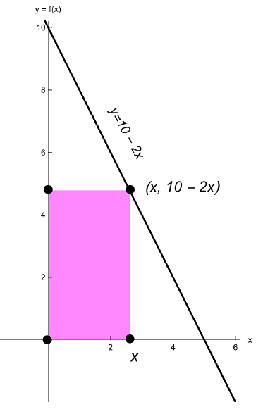

We’re trying to maximize the area \(A = x \cdot y\).
First, we want to turn this area formula into a function of \(x\). To do that we use the constraint \(y = 10 - 2x\). Substituting, we find the function we’re trying to maximize is \(A(x) = x (10 - 2x) = 10x - 2x^2\).
Next, we need to identify the domain of \(A\).
To find the largest value we compute the \(x\)-intercept of \(y = 10 - 2x\):
Therefore \(\mathrm {Domain}(A) = (0, 5)\).
Next we locate the critical points of \(A\). Since \(A'(x) = 10 - 4x\) is defined on \((0, 5)\), to locate critical points solve
To finish, we check the sign of the derivative an intervals \((0,\frac {5}{2})\), and \((\frac {5}{2},5)\). Since \(A'(x) = 10 - 4x=-4(x-\frac {5}{2})\), it follows that \(A'(x)>0\) on the interval \((0,\frac {5}{2})\) and \(A'(x)<0\) on the interval \((\frac {5}{2},5)\). Therfore the function \(A\) has a local maximum at \(x=\frac {5}{2}\). This also a global maximum, since the function is increasing on \((0,\frac {5}{2})\), and decreasing on \((\frac {5}{2},5)\). Therefore the maximum area occurs when the rectangle has a base with length \(5/2\) units and height with length of \(5\) units. The area with these dimensions is \(25/2\).